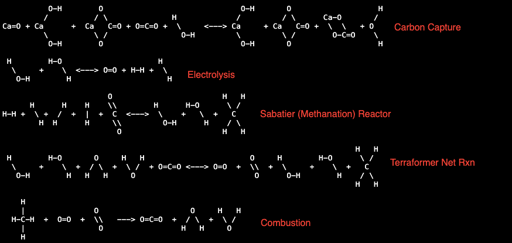
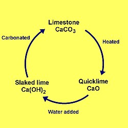
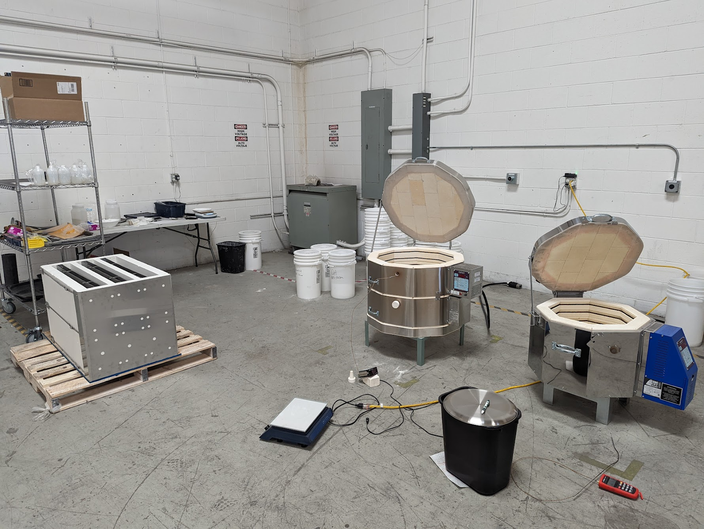
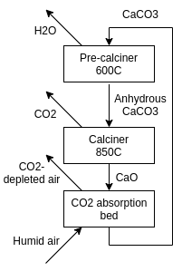
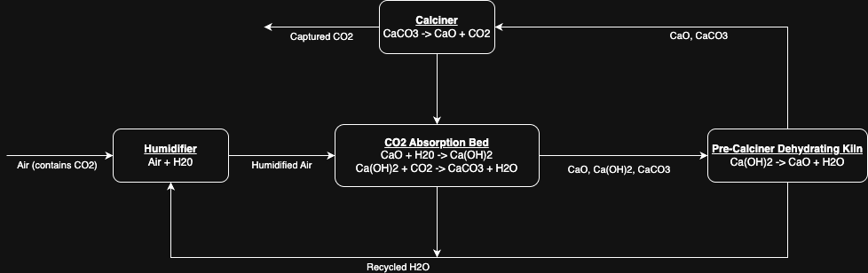
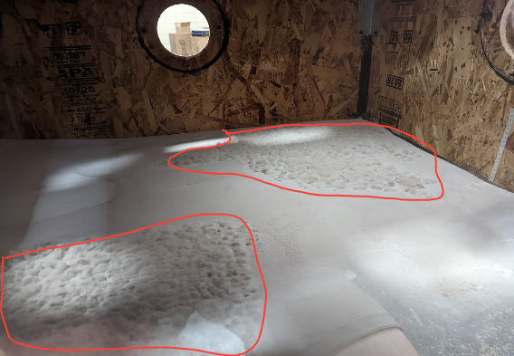
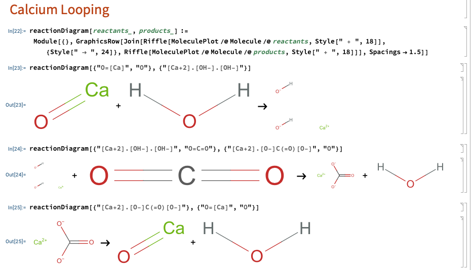
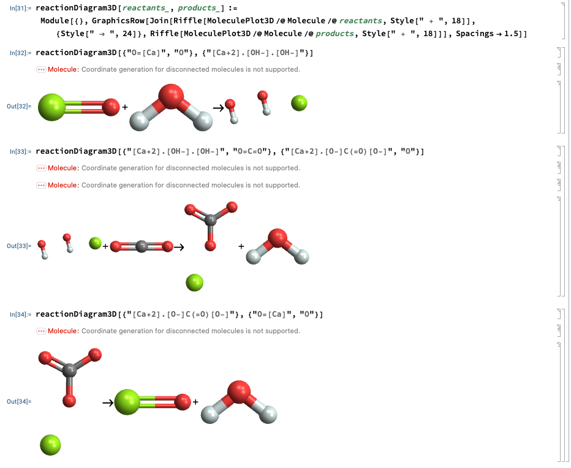

IN PROGRESS
Terraformer Research Project Writeup
Arihant Gadgade
Terraformer Research Project Directory
Date Published: 5/12/2025
Contents
- 1. Introduction: INSERT HERE
- 2. Direct Air Capture: INSERT HERE
1. Introduction 🔝
 [Chemical Rxn Diagrams from Terraform Industries website]
2. Direct Air Capture 🔝
2.1. Purpose 🔝
Direct air capture (DAC) is how we are performing carbon capture. We need carbon dioxide and hydrogen to create the methane, and thus this DAC is used to get the CO2.
2.2. Overview of Science and Processes 🔝
Simply: air goes in, then CO2 from the air is removed,
the rest of the air leaves, and the captured CO2
is sent for methanation.
Breaking this into parts:
1. Air goes in: achieved with fans
2. CO2 from the air is removed: carbonation using calcium hydroxide
3. Captured CO2 is sent for methanation: calcination using kilns
Steps 2 and 3 are part of the lime cycle.
Lime Cycle:

The lime cycle is useful for understanding calcium looping which is the backbone of our DAC.
Calcium Looping:
Slaking: CaO(s) + H2O(g) -> Ca(OH)2(s) ΔH = -110.2 kJ/mol [enthalpy change calculated using standard enthalpy of formation sourced from the Wikipedia page of each of these compounds]
Carbonation: Ca(OH)2(s) + CO2(g) -> CaCO3(s) + H2O(g) ΔH = -68.3 kJ/mol
Calcination: CaCO3(s) -> CaO(s) + CO2(g) ΔH = +178.5 kJ/mol
This resulting CaO is then looped back into the first reaction,
and the process repeats.
Should be noted that CaO degrades over time:
source
So, as the CaO is not infinitely reusable, this must be accounted for in the design of the DAC.
Sorbents:
The process of carbonation uses calcium hydroxide as a sorbent for absorbing carbon dioxide.
Map of sorption:
Sorption: process by which one substance becomes attached to another
- Adsorption: substance taken up by the surface of another
- Physisorption
- Chemisorption
- Absorption: substance taken up by the bulk phase of another
- Physical Absorption
- Chemical Absorption
In this map, carbonation using calcium hydroxide is under chemical absorption.
Carbon dioxide is taken up by the bulk phase of the calcium hydroxide, in turn producing
calcium carbonate and water. Our DAC system will have to facilitate this absorption, which
we'll do with a fluidized bed.
Kilns:
Let's look at the temperature needed to run the calcination.
To do this we'll use the Gibbs free energy.
ΔG° = ΔH° - TΔS°
We already have the enthalpy change of the reaction (+178.5 kJ/mol),
we only need the entropy change.
ΔS = (40 + 214) - 93 J/(K*mol) = 161 J/(K*mol) [Std molar entropy sourced from wiki]
Solving for equilibrium temp:
ΔG° ≤ 0 ⇒ Teq=ΔH°/ΔS° = 178000/161 = 1109 K = 836°C
Thus, the temperature to run the kiln for calcination is:
T ≥ 836°C
We'll probably want to run the kilns at 850-900°C for a healthy driving force.
However, running above 950°C will contribute to sintering, decreasing the life of our sorbent.
Let's look at the kilns they are using:
"In the kiln area we have 5 kW and 15 kW commercial grade pottery kilns, as well as a production prototype 60 kW calcination oven (“the toaster”). Its design differs substantially from the kilns as its material can be contained in long, flat shapes that have better heat transfer properties." [Taken from TI Whitepaper 2.0]
***I believe "the toaster" is on the pallet on the left of the image.
2.3. Designing the DAC 🔝
[Disclaimer: I am just trying to recreate the system from what they've published as there isn't an exact blueprint to follow, so there may be innacuracies.]
Ok, so now we've went over the science we can start trying to design the system.
They gave an overview of the calcium concentration cycle in their
first whitepaper (so their design might've changed), and I'll base the schematics off that.

[Image from: TI Whitepaper]
Rough Diagram:

In this diagram we see the humidifier, CO2 absorption bed, dehydrator, and calciner.
The humidifier can arguably be incorporated into the absorption bed. The processes we see from the
lime cycle (calcium looping) are the calcination in the calciner and the slaking and carbonation simultaneously in
the CO2 absorption bed. We can also see this unit is not 1:1 with the lime cycle we discussed
earlier.
I haven't included it, but there should also be some mechanism for new calcium carbonate to be fed in as the calcium oxide
degrades.
DAC as a Chemical Reactor:
Overview Map of Chemical Reactors:
- Batch Reactors
- Semi-Batch Reactors
- Continuous Reactors
- Plug-Flow Reactors
- Continuous Stirred Tank Reactors (CSTR)
- Fluidized-Bed Reactors
They stated this cycle can be performed with continuous or batch material processing machinery,
but for these purposes I am considering this as a continuous reactor. The calciner and pre-calciner subunits
behave as plug-flow reactors, and the absortion bed behaves as a fluidied-bed reactor. Thus, the whole unit is acting
as a continuous reactor.
Fluidization test image from TI Whitepaper 2.0:

Here we see in the red, the sorbent being fluidized, with gas presumably coming up through the floor of the bed.
DAC CAD:
[DAC CAD is a palindrome]
Here I'm going to show a CAD model of a DAC using the schematics above.
2.4. Experiments 🔝
- kiln is too expensive, so I will be doing budget carbon capture
- experiments: chemical rxns of the lime cycle, building carbon capture systems
2.5. Fluid Dynamics 🔝
2.6. Extra 🔝
- all types of carbon capture
Mathematica
Playing around with Mathematica to visualize the chemical structure
of the species in the calcium looping rxns:

Note: Mathematica displays ionic formulae as separate fragments unless you draw a bond.
And 3D as well:

Limestone Quarry:
Videos showing limestone quarries:
video1,
video2,
video3
Fun Veritasium Concrete Vid:
Limestone (mainly CaCO3) is the primary component used to make cement/concrete,
and it mainly comes from ancient sealife. Thus the fun quote: "skyscrapers are made from seashells" which
can be seen in this
Veritasium video.
Cracking CO2:
Considering how the majority of the energy demand for the Terraformer comes from
the electrolyzer, and the goals of TI are to solve climate change profitably, it may
be worthwhile to looking into cracking CO2. Cracking CO2 gives
us the elemental carbon and oxygen. Carbon is quite useful, so if we could find a way
to economically produce carbon from captured CO2, then we've found a way to make a
profitable carbon negative process, as opposed to just the carbon neutrality of the
current Terraformer. However CO2 is quite stable, so further analysis is needed.